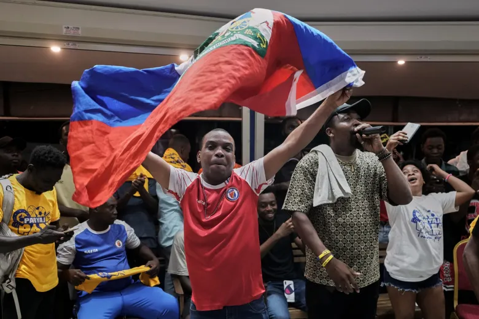
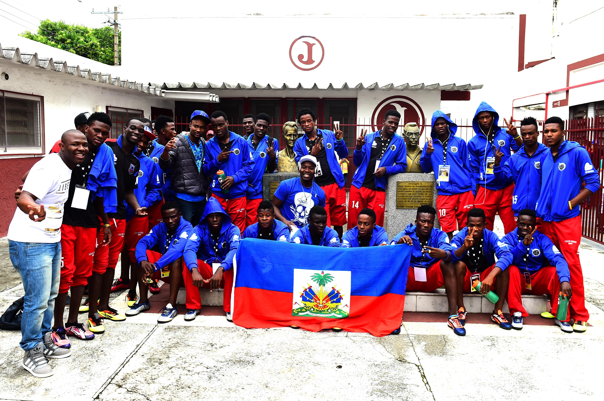

O Haiti disputará a Copa do Mundo pela segunda vez em 2026, voltando ao torneio após mais de meio século. Sua única participação anterior havia sido em 1974. Trata-se de um país que atravessa grave crise humanitária e política, com cerca de 80% da população vivendo na pobreza — o que torna a classificação algo muito maior do que futebol. A vaga veio com vitória por 2 a 0 sobre a Nicarágua na última rodada das Eliminatórias da Concacaf.
Seleção
HISTÓRIA
A melhor Copa
do Mundo do
Haiti
O retrospecto geral do Haiti em Mundiais é de 3 jogos, 0 vitórias, 0 empates e 3 derrotas, com 2 gols marcados e 14 sofridos — tudo em 1974. No temido Grupo 4 daquela edição, o país perdeu para as poderosas Argentina e Itália, e ainda foi goleado pela sensação Polônia, que terminaria o torneio com o bronze.
1973
O Haiti conquistou o torneio continental, disputado em Porto Príncipe, e garantiu a vaga na Copa de 1974 — superando inclusive o México, potência histórica da região que havia participado ininterruptamente desde 1950.
2026
Ao se classificar, o Haiti tornou-se a única seleção caribenha a disputar duas Copas do Mundo. A classificação veio terminando em primeiro no grupo das Eliminatórias à frente de Costa Rica, Honduras e Nicarágua.


Momentos inesquecíveis
01
Em 1974, o gol de Emmanuel Sanon contra a Itália encerrou uma sequência absurda do goleiro Dino Zoff, que estava há mais de 1.100 minutos sem sofrer gols pela seleção italiana.
02
Em 1950, Joe Gaetjens, nascido em Porto Príncipe e naturalizado americano, marcou o gol com que os Estados Unidos venceram a Inglaterra por 1 a 0 no Brasil considerada a primeira grande surpresa da história das Copas.
03
A classificação de 2026 foi celebrada como um símbolo de esperança para o país, que vive uma das piores crises políticas e humanitárias de sua história.
04
Em 1974, nas eliminatórias , o Haiti não deu chance à concorrência, passando por Porto Rico com 12 a 0 no agregado e liderando o hexagonal classificatório com campanha praticamente perfeita.
Detalhes
culturais do país